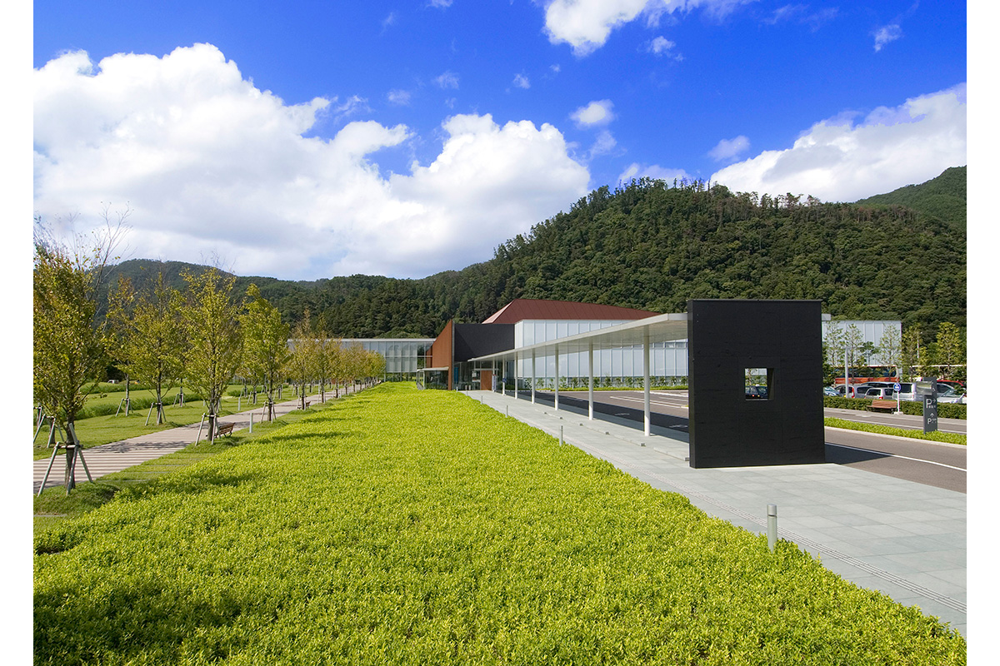
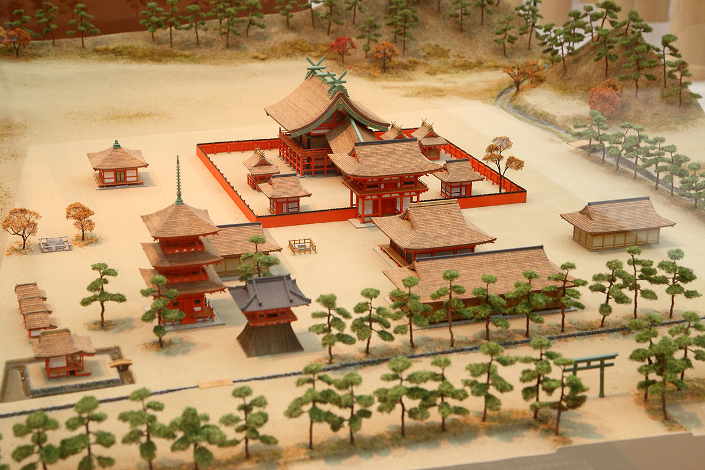
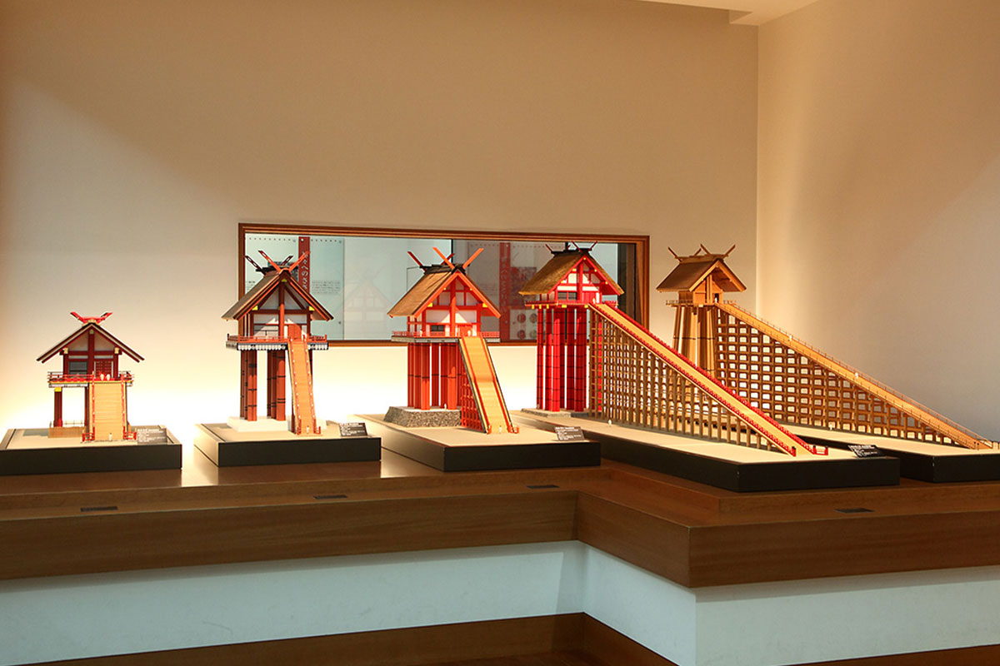
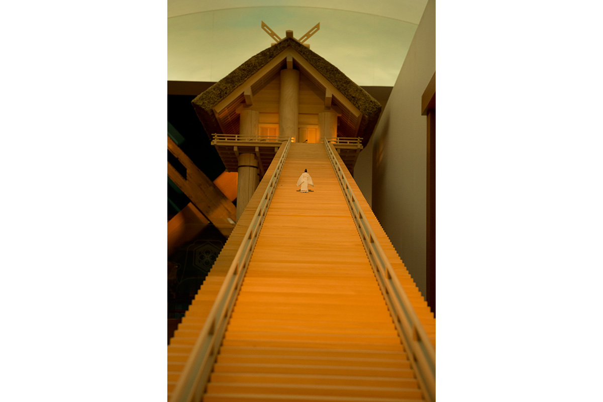
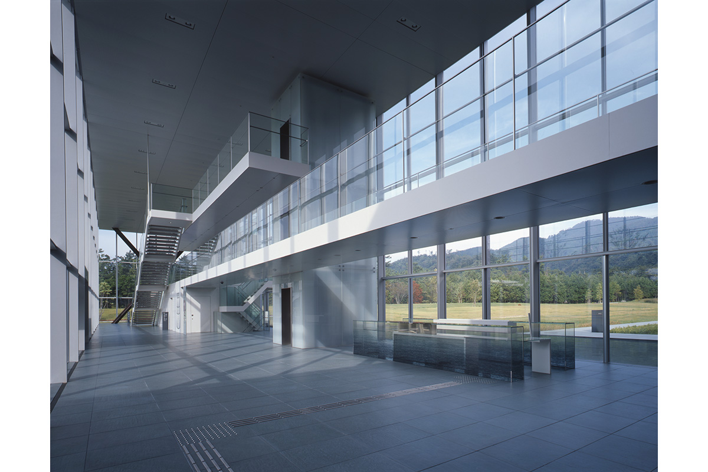

Префектура Симанэ · Идзумо · музей
Музей древней истории Идзумо: что посмотреть рядом со святилищем Идзумо-тайся

Сразу за оградой святилища Идзумо-тайся начинается территория Музея древней истории Идзумо. Зайти сюда стоит до святилища или после него: здесь объясняют, почему Идзумо считают одним из истоков Японии.
Музей
Древняя сила Идзумо
Святилище Идзумо-тайся одно из старейших и самых почитаемых в Японии, и музей по соседству помогает понять, на какой земле оно выросло. Префектуральный Музей древней истории Идзумо открылся в 2007 году. В постоянной экспозиции стоят макеты древнего святилища на высоких сваях, а рядом лежат национальные сокровища: бронзовые мечи с раскопок Кодзиндани и бронзовые колокола дотаку с раскопок Камо-Ивакура. Оба памятника находятся в префектуре Симанэ. По залам хорошо видно, как жили древние жители Идзумо и как складывался этот край.

Старший научный сотрудник музея советует не ограничиваться одним святилищем.
«Идзумо с древнейших времён было местом силы. Думаю, сил прибавляет уже сама поездка сюда, но обязательно загляните и к нам. Древние люди Идзумо знали меру и уважали и природу, и друг друга. В наше беспокойное время знание о далёком прошлом звучит как очень важное послание»
старший научный сотрудник музея

Экспозиция
Святилище в полный рост
Из центрального холла посетитель попадает в постоянную экспозицию, и первым его встречает высокое древнее святилище. Там же можно увидеть в натуральную величину тиги, скрещённые брусья на коньке крыши, и много других экспонатов, связанных с Идзумо-тайся.

Архитектура
Здание работы Фумихико Маки
Здание музея спроектировал Фумихико Маки (1928–2024), один из главных японских архитекторов модернизма, лауреат Притцкеровской премии 1993 года. Среди его известных работ выставочный центр Макухари Мэссэ под Токио и комплекс Хиллсайд Террас в Токио.
Стальные стены здесь напоминают о выплавке татара, древнем способе получать железо, которым славился этот край, а стекло говорит о современности. Древнее и новое соединены так, как и подобает земле Идзумо.

Префектуральный музей древней истории Идзумо
- Адрес
- префектура Симанэ, Идзумо, Тайся-тё, Кидзуки-хигаси, 99-4
- Телефон
- +81 853-53-8600
- Часы работы
- 9:00–18:00 (с ноября по февраль до 17:00)
- Выходные
- третий вторник месяца (если это праздник, то следующий день)
- Цены / Вход
- 610 иен (временные выставки оплачиваются отдельно)
- Как добраться
- от станции JR Идзумоси автобусом компании «Итибата» в сторону «Идзумо-тайся, Хиномисаки» до остановки «Сэймон-маэ», дальше 2 минуты пешком. На машине: от развязки Идзумо на скоростной дороге Санъин 8,3 км по шоссе 431. Есть парковка.
- Сайт
- izm.ed.jp
Фото: Харуо Накано, Таканори Судзуки.